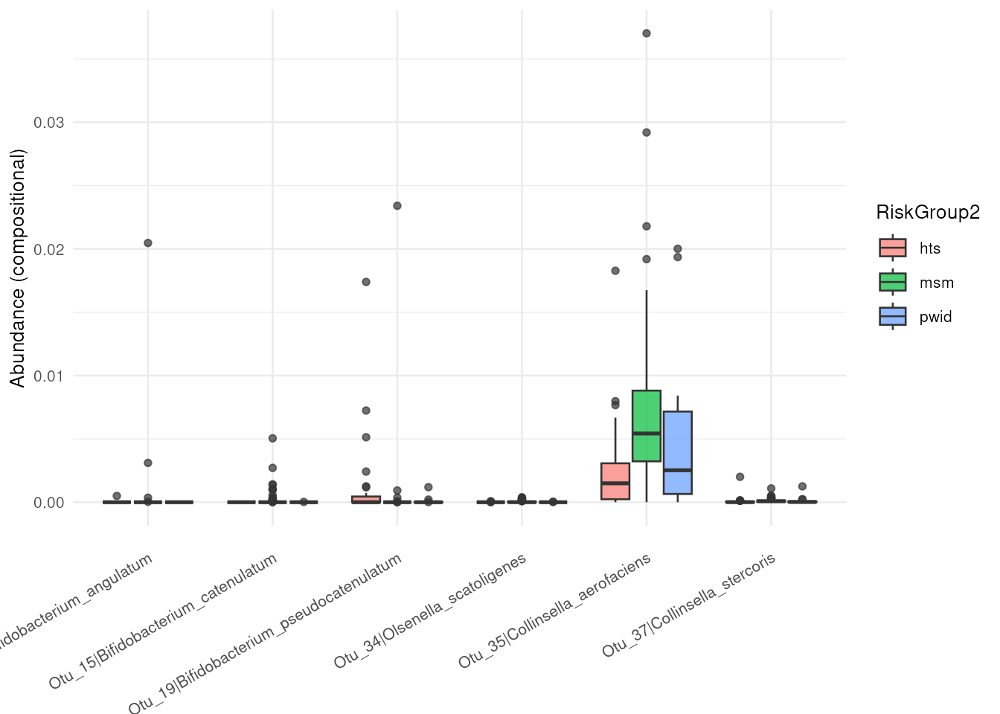

dar provides a common interface for configuring, running
and comparing differential abundance methods. A recipe records
preprocessing steps, a shared statistical design and the methods to
execute. The prepared recipe contains per-method results; consensus is
an optional summary, not a required endpoint.
Example data
The included metaHIV_phy object is a
phyloseq dataset from Noguera-Julian et
al. (2016). Here we compare its recorded RiskGroup2
categories. This unadjusted example illustrates the software; it does
not establish causal effects or validated microbial biomarkers.
data("metaHIV_phy", package = "dar")
metaHIV_phy
#> phyloseq-class experiment-level object
#> otu_table() OTU Table: [ 451 taxa and 156 samples ]
#> sample_data() Sample Data: [ 156 samples by 3 sample variables ]
#> tax_table() Taxonomy Table: [ 451 taxa by 7 taxonomic ranks ]Configure a workflow
Create a recipe and define the model once with
add_model(). targets selects the variable
whose effects are tested; other fixed terms can adjust for covariates.
tax_level selects the rank at which methods analyze the
data. An explicit reference makes the direction of comparisons
clear.
rec <- recipe(metaHIV_phy) |>
add_model(
~ RiskGroup2,
targets = "RiskGroup2",
tax_level = "Species",
reference = c(RiskGroup2 = "hts")
) |>
step_subset_taxa(tax_level = "Kingdom", taxa = c("Bacteria", "Archaea")) |>
step_filter_by_prevalence(threshold = 0.03) |>
step_deseq(id = "deseq") |>
step_maaslin(min_prevalence = 0, id = "maaslin")
rec
#> ── DAR Recipe ──────────────────────────────────────────────────────────────────
#> Inputs:
#>
#> ℹ phyloseq object with 451 taxa and 156 samples
#> ℹ variable of interes RiskGroup2 (class: character, levels: hts, msm, pwid)
#> ℹ taxonomic level Species
#>
#> Statistical model:
#>
#> ℹ ~RiskGroup2
#>
#> Preprocessing steps:
#>
#> ◉ step_subset_taxa() id = subset_taxa__Ensaïmada
#> ◉ step_filter_by_prevalence() id = filter_by_prevalence__Puff_pastry
#>
#> DA steps:
#>
#> ◉ step_deseq() id = deseq
#> ◉ step_maaslin() id = maaslinThe prevalence step retains taxa present in more than 3% of samples. We disable MaAsLin3’s additional prevalence filter because the recipe already defines a shared filter; this does not make the engines’ assumptions or effect scales identical. These two compatible methods illustrate the interface, not a universally recommended panel.
Run the recipe
prep() applies preprocessing in order, resolves the
shared model and runs compatible methods. This guide uses sequential
execution. For separate worker processes, use
parallel = TRUE and choose workers for the
available memory.
fit <- prep(rec, parallel = FALSE)
fit
#> ── DAR Results ─────────────────────────────────────────────────────────────────
#> Inputs:
#>
#> ℹ phyloseq object with 278 taxa and 156 samples
#> ℹ variable of interes RiskGroup2 (class: character, levels: hts, msm, pwid)
#> ℹ taxonomic level Species
#>
#> Results:
#>
#> ✔ deseq diff_taxa = 155
#> ✔ maaslin diff_taxa = 47
#>
#> ℹ 35 taxon-contrast effects are present in all tested methodsInspect per-method results
tidy_results() returns a common table with taxon IDs,
contrasts, effect scales, statistics and method decisions.
method identifies the engine and step_id
identifies its configured instance. Native effect scales remain
distinct; uniform columns do not imply interchangeable effect sizes or
p-values.
results <- tidy_results(fit)
results |>
dplyr::select(
taxa_id, contrast_id, effect_size, effect_metric,
adj_p_value, significant, method, step_id
) |>
head()
#> # A tibble: 6 × 8
#> taxa_id contrast_id effect_size effect_metric adj_p_value significant method
#> <chr> <chr> <dbl> <chr> <dbl> <lgl> <chr>
#> 1 Otu_1 RiskGroup2[m… 0.640 log2_fold_ch… 4.70e- 1 FALSE deseq
#> 2 Otu_2 RiskGroup2[m… 1.58 log2_fold_ch… 2.10e- 1 FALSE deseq
#> 3 Otu_7 RiskGroup2[m… 1.28 log2_fold_ch… 3.53e- 1 FALSE deseq
#> 4 Otu_10 RiskGroup2[m… 1.39 log2_fold_ch… 9.84e- 2 FALSE deseq
#> 5 Otu_11 RiskGroup2[m… 23.3 log2_fold_ch… 4.46e-12 TRUE deseq
#> 6 Otu_12 RiskGroup2[m… 2.23 log2_fold_ch… 9.35e- 2 FALSE deseq
#> # ℹ 1 more variable: step_id <chr>
results |>
dplyr::group_by(step_id, contrast_id) |>
dplyr::summarise(
n_significant = sum(significant, na.rm = TRUE),
.groups = "drop"
)
#> # A tibble: 6 × 3
#> step_id contrast_id n_significant
#> <chr> <chr> <int>
#> 1 deseq RiskGroup2[msm-hts] 121
#> 2 deseq RiskGroup2[pwid-hts] 63
#> 3 deseq RiskGroup2[pwid-msm] 108
#> 4 maaslin RiskGroup2[msm-hts] 39
#> 5 maaslin RiskGroup2[pwid-hts] 5
#> 6 maaslin RiskGroup2[pwid-msm] 21These results can be used directly, without bake() or
cool().
Plot a selected comparison
Plots accept explicit contrast selectors so distinct hypotheses are
not mixed. Here we show up to six taxa detected by at least one method
for the comparison of msm with hts. An empty
selection is a valid result, not a plotting failure.
comparison_id <- "RiskGroup2[msm-hts]"
taxa_ids <- results |>
dplyr::filter(contrast_id == comparison_id, significant) |>
dplyr::distinct(taxa_id) |>
dplyr::pull(taxa_id) |>
head(6)
if (length(taxa_ids)) {
abundance_plt(
fit, taxa_ids = taxa_ids,
contrast_id = comparison_id, type = "boxplot"
)
} else {
message("No significant taxa for this comparison.")
}
#> You have inserted a phyloseq object. The phyloseq-based methods will be deprecated. We recommend switching to the (Tree)SummarizedExperiment framework and mia R/Bioconductor package.
Next steps
- Data inputs and inspection: objects, metadata and units.
- Quality control and preprocessing: QC and filters.
- Statistical models and contrasts: adjustment, repeated measurements and method compatibility.
- Exploring results and optional consensus: effect interpretation, agreement plots and explicit consensus rules.
- Saving and sharing analysis recipes: reusable configurations and the limits of recipe export.
sessionInfo()
#> R version 4.6.1 (2026-06-24)
#> Platform: x86_64-pc-linux-gnu
#> Running under: Ubuntu 24.04.4 LTS
#>
#> Matrix products: default
#> BLAS: /usr/lib/x86_64-linux-gnu/openblas-pthread/libblas.so.3
#> LAPACK: /usr/lib/x86_64-linux-gnu/openblas-pthread/libopenblasp-r0.3.26.so; LAPACK version 3.12.0
#>
#> locale:
#> [1] LC_CTYPE=en_US.UTF-8 LC_NUMERIC=C
#> [3] LC_TIME=en_US.UTF-8 LC_COLLATE=en_US.UTF-8
#> [5] LC_MONETARY=en_US.UTF-8 LC_MESSAGES=en_US.UTF-8
#> [7] LC_PAPER=en_US.UTF-8 LC_NAME=C
#> [9] LC_ADDRESS=C LC_TELEPHONE=C
#> [11] LC_MEASUREMENT=en_US.UTF-8 LC_IDENTIFICATION=C
#>
#> time zone: UTC
#> tzcode source: system (glibc)
#>
#> attached base packages:
#> [1] stats graphics grDevices utils datasets methods base
#>
#> other attached packages:
#> [1] dar_1.9.12
#>
#> loaded via a namespace (and not attached):
#> [1] RColorBrewer_1.1-3 jsonlite_2.0.0
#> [3] MultiAssayExperiment_1.39.1 magrittr_2.0.5
#> [5] TH.data_1.1-5 ggbeeswarm_0.7.3
#> [7] farver_2.1.2 rmarkdown_2.32
#> [9] fs_2.1.0 ragg_1.5.2
#> [11] vctrs_0.7.3 multtest_2.69.0
#> [13] DelayedMatrixStats_1.35.0 SQUAREM_2026.1
#> [15] mixsqp_0.3-54 htmltools_0.5.9
#> [17] S4Arrays_1.13.2 truncnorm_1.0-9
#> [19] BiocNeighbors_2.7.3 SparseArray_1.13.4
#> [21] sass_0.4.10 bslib_0.12.0
#> [23] htmlwidgets_1.6.4 desc_1.4.3
#> [25] sandwich_3.1-3 plyr_1.8.9
#> [27] DECIPHER_3.9.3 zoo_1.9-1
#> [29] cachem_1.1.0 igraph_2.3.4
#> [31] lifecycle_1.0.5 iterators_1.0.14
#> [33] pkgconfig_2.0.3 rsvd_1.0.5
#> [35] Matrix_1.7-6 R6_2.6.1
#> [37] fastmap_1.2.0 collapse_2.1.8
#> [39] rbibutils_2.4.1 MatrixGenerics_1.25.0
#> [41] numDeriv_2016.8-1.1 digest_0.6.39
#> [43] S4Vectors_0.51.10 DESeq2_1.53.6
#> [45] scater_1.41.2 irlba_2.4.1
#> [47] textshaping_1.0.5 GenomicRanges_1.65.4
#> [49] vegan_2.7-6 beachmat_2.29.3
#> [51] labeling_0.4.3 invgamma_1.2
#> [53] TreeSummarizedExperiment_2.21.0 abind_1.4-8
#> [55] mgcv_1.9-4 compiler_4.6.1
#> [57] withr_3.0.3 S7_0.2.2
#> [59] backports_1.5.1 BiocParallel_1.47.0
#> [61] viridis_0.6.5 DBI_1.3.0
#> [63] MASS_7.3-66 rappdirs_0.3.4
#> [65] DelayedArray_0.39.8 biomformat_1.41.0
#> [67] bluster_1.23.1 permute_0.9-10
#> [69] optparse_1.8.2 tools_4.6.1
#> [71] vipor_0.4.7 otel_0.2.0
#> [73] beeswarm_0.4.0 ape_5.8-1
#> [75] glue_1.8.1 nlme_3.1-171
#> [77] grid_4.6.1 Rtsne_0.17
#> [79] checkmate_2.3.4 mia_1.21.11
#> [81] cluster_2.1.8.3 reshape2_1.4.5
#> [83] ade4_1.7-24 generics_0.1.4
#> [85] microbiome_1.35.1 gtable_0.3.6
#> [87] tidyr_1.3.2 data.table_1.18.6.1
#> [89] utf8_1.2.6 BiocSingular_1.29.2
#> [91] ScaledMatrix_1.21.0 XVector_0.53.0
#> [93] BiocGenerics_0.59.12 ggrepel_0.9.8
#> [95] foreach_1.5.2 pillar_1.11.1
#> [97] stringr_1.6.0 yulab.utils_0.2.5
#> [99] emdbook_1.3.14 splines_4.6.1
#> [101] dplyr_1.2.1 maaslin3_1.5.7
#> [103] treeio_1.37.1 lattice_0.23-1
#> [105] survival_3.8-12 tidyselect_1.2.1
#> [107] DirichletMultinomial_1.55.1 SingleCellExperiment_1.35.2
#> [109] locfit_1.5-9.12 Biostrings_2.81.9
#> [111] scuttle_1.23.2 knitr_1.52
#> [113] reformulas_0.4.4 gridExtra_2.3.1
#> [115] phyloseq_1.57.0 IRanges_2.47.5
#> [117] Seqinfo_1.3.2 SummarizedExperiment_1.43.0
#> [119] stats4_4.6.1 xfun_0.61
#> [121] Biobase_2.73.2 matrixStats_1.5.0
#> [123] stringi_1.8.9 lazyeval_0.2.3
#> [125] yaml_2.3.12 evaluate_1.0.5
#> [127] codetools_0.2-20 bbmle_1.0.26
#> [129] tibble_3.3.1 cli_3.6.6
#> [131] systemfonts_1.3.2 Rdpack_2.6.6
#> [133] jquerylib_0.1.4 mirai_2.7.3
#> [135] Rcpp_1.1.2 coda_0.19-4.1
#> [137] nanonext_1.10.3 bdsmatrix_1.3-7
#> [139] parallel_4.6.1 pkgdown_2.2.1
#> [141] ggplot2_4.0.3 sparseMatrixStats_1.25.0
#> [143] mvtnorm_1.4-2 decontam_1.33.0
#> [145] viridisLite_0.4.3 apeglm_1.35.0
#> [147] tidytree_0.4.8 scales_1.4.0
#> [149] purrr_1.2.2 crayon_1.5.3
#> [151] rlang_1.3.0 multcomp_1.4-32
#> [153] ashr_2.2-63